Wireless Corne – capas del teclado
Las teclas resaltadas son las que hay que mantener apretadas para estar en esa capa.
Capa 0 · Base
Capa 1 · Num (mantener el pulgar izquierdo interno)

Capa 2 · Numpad (sin acceso desde Base)

Capa 3 · Sym (mantener Num y después el pulgar derecho del medio)
